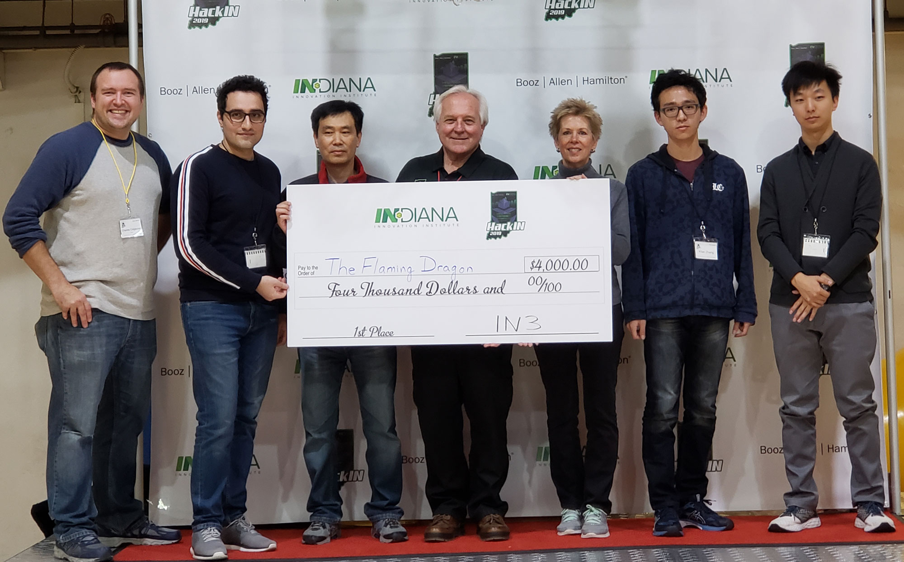

Who am I?
Personal Details

- Email: vafa [at] andalibi [dot] me
- Current Research Interests:
System and Network Security Computational Neuroscience
About me
People find me to be self-sufficient, creative and self-motivated in projects and research. With a background in computer engineering and a double major master degree in communications system & networks and biomedical engineering, I see myself being an asset in interdisciplinary projects and research areas. I am passionate about solving real-world security and privacy problems and I try to deploy my diverse background for that purpose.
My Background
Experience
2019 Summer
Software Engineer Intern
Job Description
During summer 2019, I was a Software Engineering Intern at Cisco under supervision of Eliot Lear and I worked on MUD-Visualizer a tool that can be used to visualize the Manufacturer Usage Description (MUD) files. An online version of the MUD-Visualizer is available at w2.mudmaker.org.
2017 January - Present
Associate Instructor
Job Description
I am a PhD student and associate instructor (and sometime co-instructor) at Indiana University Bloomington. Currently, I have been an AI for Introduction to Programming, Introduction to the Mathematics of Cybersecurity, and in spring 2018 DongInn Kim and I were co-instructors for the CyberDefense Competition Course.
2016 February - 2016 December
Research Assistant
Job Description
As a member of the Visual Neuroscience group in Helsinki University Central Hospital, my duty was to design and implement a brain cortex simulator in python on top of Brian2 library. This simulator is compatible with Brian2 stand-alone devices, i.e. C++ and GeNN (CUDA).
2015 July - 2015 December
Research Assistant
Job Description
Developing a MEA-plate simulator as well as utilizing the simulation of spiking neuronal networks were for simple pattern recognition tasks. (Funded by Academy of Finland)
2014 November - 2015 May
Research Assistant - Master Thesis Worker
Job Description
I started to work on my master thesis in department of Pervasive Computing. The goal of my master thesis was to design and implement a realistic model of neuronal activity in MEA plates in order to create a simulated bio-integrated wireless sensor network. In another part, functional connectivity analysis of the neuronal networks were implemented both in MATLAB and CUDA (PyCUDA) and the performance improvement was evaluated.
This research project was funded by the Academy of Finland under project number 278882, entitled Bio-integrated Software Development for Adaptive Sensor Networks.
My Skills
Project to Skill Mapping
My Education
Education
Ongoing
Computer Science
Doctor of Philosophy
I am currently a PhD student and an Associate Instructor (and sometime a co-instructor) at Indiana University Bloomington. I am also a member of the Prof. Camp's research group, working
on security and privacy projects.
2016
Biomedical Engineering & Communication Systems and Networks
Master of Science
I started my master studies at Tampere University of Technology (TUT), Finland, studying Biomedical Engineering. In the second year of my master, I changed my degree type to a double major degree: biomedical engineering with a
focus area on medical instrumentation and Information Technology with a focus area on Communication systems and networks. During my master studies, I also had extracurricular research in parallel computing, computational neuroscience,
bioinformatics, and systems modelling.
2012
Computer Engineering
Bachelor of Science
I received my bachelor's degree in Computer Engineering with a major in computer hardware from Iran University of Science and Technology (IUST) in Tehran, Iran. During my bachelor I became involved in network traffic analysis and modelling as well as basic image processing. In the final year of my bachelor, I decided to continue my studies to master's level in an interdisciplinary field combining computer science and biomedical engineering to apply my knowledge of compute science in health-care.
My Research History
Publications
Journal Articles
Conference Articles
My Achievements
Honors and Awards
Winning HackIN Competition
We were ranked first in the HackIN Reverse Engineering Hackathon in Indianapolis and won the $4000 prize!
EMBS Open Finalist
I had the honor to have my paper entitle "SiMEA: a Framework for simulating neurons on Multi-Electrode Array" selected as a finalist of the Student Paper Competition (SPC) in The 38th Annual International Conference of the IEEE Engineering in Medicine and Biology Society (EMBC'16), Florida, USA.
Demola Tampere Best Project Award
Our project won the best project award and Intel, as our project partner, licensed our product based on our prototype.
My Hobbies &
Interests
-
Music
MusicMusic is my lifelong interest. I compose and arrange music from time to time and play four musical instruments: Piano, Tar, Setar and Tonbak. I am also member of Teekkarikuoro, i.e. choir group of engineering students of Tampere. I love classical, Jazz and Traditional Iranian music.
-
Articles
Journal ArticlesI follow some journals and conferences related to my research areas of interest at my leisure, e.g. TIFS, EMBC and IMCS. On top of that, I read recommended online articles published in scientific magazine such as Technology Review and Wired.
-
Coding
ProgrammingI literally enjoy coding in any programming language. The research becomes more interesting when it intersects programming and that is when I will be engrossed in the research.
-
Technology
Latest GadgetsI am eager to learn about and work with new gadgets. It is of most interest to me when the gadget is meant for development or programming, e.g. Raspberry Pi mini computer.
-
Sports
SportsDoing sports, e.g. jogging, volleyball and swimming, is part of my interests. I believe disciplining oneself to do sport on a regular basis, although difficult, is the high-road to a healthy mind.
-
Podcast
PodcastPodcasts could be informative and brain-boosting, if selected wisely. I usually listen to my podcast collection at my dead times.
-
Tutoring
TutoringI was tutor of new exchange students in TUT. As long as I have time for it, I volunteer to help new coming students because it makes me happy that I am helping others.
-
Photography
PhotographyPhotographing is among my absorbing hobbies. I firmly believe that it changes the way I see things and helps me to express my perspectives. I also have an official photography certificate from Iran ministry of culture.
Contact
Get in touch
If you have questions or comments please use this form to contact me. I will respond promptly, usually within one or two working days.
Work Address
- Luddy Hall, 700 N Woodlawn Ave, Bloomington, IN
-
vafa [at] andalibi.me
vafandal [at] iu.edu